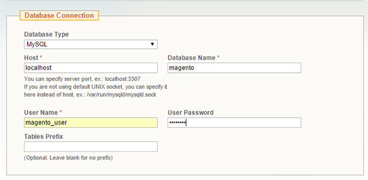
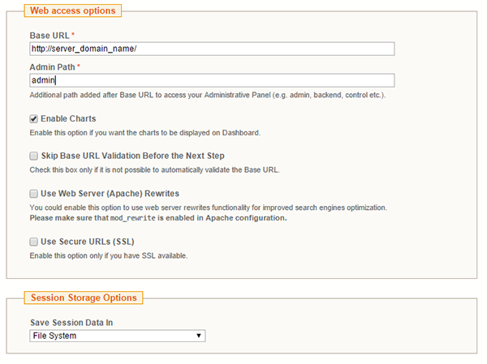
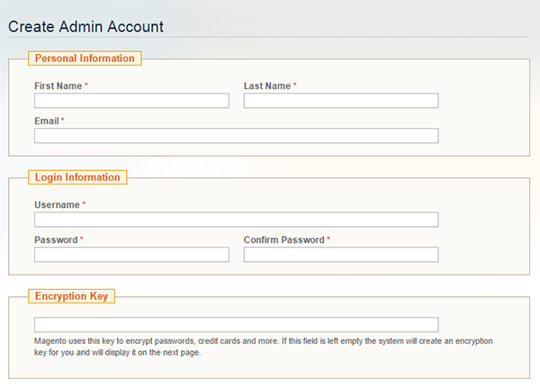

Setting up Magento on LAMP server, Applications, LAMP, PHP.
Install and Configure Magento on Your LAMP Server - CentOS, Fedora
Difficulty: 1
Time: 45 minutes
Magento is a popular Content Management System (CMS) for ecommerce websites. This article explains the installation and configuration of Magento on CentOS or Fedora.
You'll need sudo privileges to perform the steps in this article.
Prerequisites
Configure PHP and Apache
You can configure PHP and Apache to handle Magento's traffic and computing tasks properly. You'll also need to install some additional packages.
Configure the virtual host of Apache
You need to configure a virtual host to let Apache know how to manage the site properly.
- Create a new virtual host file at
/etc/httpd/conf/. You can name this virtual host magento if you want, or another name.
sudo vim /etc/httpd/conf/magento.conf
- Paste the following code in this file:
<VirtualHost *:80>
DocumentRoot /var/www/html
<Directory /var/www/html/>
Options Indexes FollowSymLinks MultiViews
AllowOverride All
</Directory>
</VirtualHost>
- Save and exit the file pressing the Esc key and then typing :wq, followed by pressing the Enter key.
Configure PHP
- To increase the memory limit of PHP, open the PHP configuration file at
/etc/php.ini in an editor.
sudo vim /etc/php.ini
- Search for
memory_limit, and then change the value from 128M to 512M.
memory_limit = 512M
- Save and exit the file by pressing the Esc key and then typing :wq, followed by pressing the Enter key.
- Install the additional PHP modules that
Magento needs.
sudo yum update
sudo wget http://dl.fedoraproject.org/pub/epel/7/x86_64/e/epel-release-7-5.noarch.rpm
sudo rpm -ivh epel-release-7-5.noarch.rpm
sudo yum install --enablerepo="epel" php-mcrypt
sudo yum install gd gd-devel php-gd php-xml tar rsync
- Restart the Apache service.
sudo service httpd restart
Create a user and MySQL database
- Log into MySQL root account.
mysql -u root -p
- Create a database with the name magento, or you may give any name.
CREATE DATABASE magento;
- Create a user magento_user, and then assign a password password to it.
CREATE USER magento_user@localhost IDENTIFIED BY 'password';
- Grant privileges.
GRANT ALL PRIVILEGES ON magento.* TO magento_user@localhost IDENTIFIED BY 'password';
- Exit from the MySQL command prompt.
FLUSH PRIVILEGES;
exit
Download Magento
- Use
wget to get Magneto files at the home directory.
cd ~
sudo wget http://www.magentocommerce.com/downloads/assets/1.9.0.1/magento-1.9.0.1.tar.gz
- Extract with tar.
sudo tar xzvf magento-1.9.0.1.tar.gz
- You can see the magento directory in your home directory. Move these unpack files to Apache's document root.
sudo rsync -avP ~/magento/. /var/www/html/
sudo rm -rf ~/magento*
- Give ownership of the file to Apache's user and group.
sudo chown -R apache:apache /var/www/html/
Complete the installation
- Access the web interface at http://server_ip.
- Agree to the terms, and click Continue.

- Select the appropriate field, and click Continue on the next page. You'll be asked for a language, time zone, and currency.

- Enter the username and password that you created during setup.

- Change the link for the admin interface here. By default, it is admin. To improve search results, consider selecting Use Web Server (Apache) Rewrites.
- Select how you want your data stored.
-
To store session data in a file, select File System.
- To store the session data in the MySQL database, select Database System, which is the preferred choice when an installation is distributed on multiple servers.
For this example, select File system, and then click Continue.

- Create an admin account on the next screen. You may leave the encryption key blank, unless you are migrating data over from some existing installation. By leaving it blank and clicking Continue, a new encryption key is generated. Store the encryption key somewhere safe, so that you can use it later if you need to migrate in the future.

On the next screen, you'll find a survey from Magento and, at the bottom, links for frontend and backend. The process of installing Magento on the LAMP server is complete.
Conclusion
In this article, you learned to install and configure Magento on a LAMP server. You can now start building your site and selling your products.